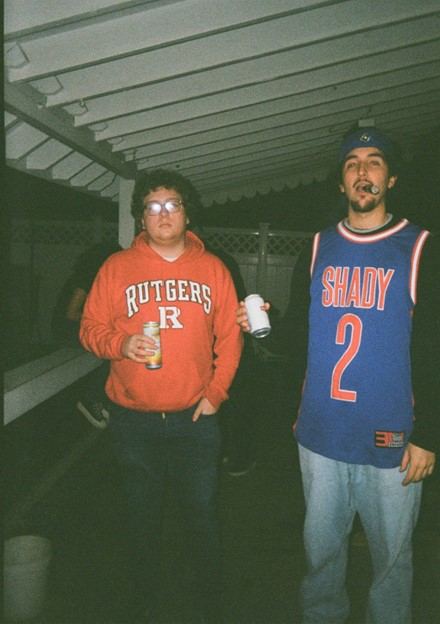

An Average Jerseyman's Trash
A Weekly Periodical by Christopher Thomas Cafiero
Starting a Fire
Preface
As a Jerseyman who feels he is educated, is on the cusp of earning a bachelor’s degree, and will soon be properly debuting on to the world of adulthood, I feel like it is necessary to understand my place in this world. I believe, truly, to understand my place in the world I have to understand how my life impacts the people around me seen and unseen. And one way that I feel is very under looked by most people I’ve met is the impact of the trash we produce, as it is handled by people we don’t know and is incinerated or fill landfills in communities not necessarily near us. Therefore, I resolved to keep an ongoing log of my trash week by week to see how my consumptive habits affect me and others, and ultimately to encourage me to produce less weight.
Body
Personally, this was an abnormal week for my trash habits as my landlord is showing my apartment off for next year, so I needed to deep clean it, as well as me starting the semester. Therefore, I don’t believe this is entirely accurate to my weekly trash, but I feel like is largely representative of my lifestyle. I choose nine items and feel they can be split into three groups with one outlier: fire starters, electronics, paper products, and the outlier being an aluminum can.
The first category, fire starters, consists solely of an empty matchbox and a dead bic lighter. I do not remember when or where I purchased either of these, but I likely have them from camping, or for the lighter it could have been given to me at a party. The matchbox is a white sliding box, with green paper for labeling on the outside, and a striking stripe on the top. The bic lighter, is the shape of a squished cylinder, red, and still sparks, however there appears to be no butane left and does not fully light.
The second category, electronics is extremely varied and is only this large because I was deep cleaning and also my phone charger decided to randomly stop working. Personally, I used a voltmeter to see if all of these were in fact not working, which was confirmed. The Kodak AA battery, is red and yellow cylinder with a plastic label around a steel case, inside is battery acid and lead which is supposed to discharge 1.5V, however it is dead and failed to discharge that much. The phone charger brick is a white rectangle with two steel prongs protruding to enter a standard American wall outlet and is being thrown out because the fuse inside burned out. The trailer wire harness is from my Grandpa’s boat trailer which I had to rewire to use for my senior design project, as the wires were cut, it looks like a rectangular black terminal with four wires stretching out of it. The breathalyzer I got from my brother back in August, however it never read correctly, and I have only used it to blow comically high BAC levels (like 2%) at parties to freak out my friends, it is a keychain with a black rectangle, a prong that folds out, and a little lcd screen to read the BAC.
The final grouping is paper products, this consists of a cardboard box for 35mm photographic film, and a receipt from the Home Depot. The receipt is from me buying diagonal cutters to cut off the trailer wire harness and consists of a long piece of white thermal paper. The cardboard box is made of non-corrugated cardboard that is white on the interior, and yellow and purple on the exterior with a perforation to open the box to get the film cassette, I likely required this for my birthday in a three pack, and now the cassette of film is in my camera.
Additionally, there is a red and white aluminum Coca-Cola can. It is trash because I drank it.
Gallery of Trash
Matchbox

Bic Lighter
Kodak AA Battery

Phone Charger Brick

Trailer Wire Harness
Breathlyzer
Receipt

Kodak Gold 200 Box

Aluminum Coca-Cola Can
Accented Trash of the Week

The above photo shows the accented item of the week, a cardboard box for a cassette of Kodak Gold 200 35mm photographic film, with the interior contents, which consist of a clear resealable plastic tube and the cassette of photographic film that can take up to 36 standard exposures. Kodak Gold 200 was the first film I bought three years ago when I started my analog photography journey, with it being in production since 1986 and revamped in 2007. The 200 in the labeling is the film speed, which represents the sensitivity of the photographic film to light with 200 being a lower sensitivity but still extremely versatile for both light and dark conditions. Below is also a photo taken by myself the day I got my first camera on Kodak Gold 200.

Table
| Item | Weight | Source | Location | Cost | Owned | Mode |
|---|---|---|---|---|---|---|
| AA Battery | 1 Gram | Shoprite | Camera | $2.00 | 6 Months | Trash |
| Wire Harness | 5 Grams | Grandpa | Trailer | $10.00 | 10 Years | Trash |
| Breathalyzer | 5 Grams | Brother | Our Room | $10.00 | 6 Months | Trash |
| Charger Brick | 15 Grams | Amazon | My Apartment | $5.00 | 4 Years | Trash |
| Matchbox | 1 Gram | Unknown | My Apartment | $1.00 | 10 Years | Trash |
| Bic Lighter | 5 Grams | Unknown | My Apartment | $1.00 | 1 Month | Trash |
| Aluminum Can | 5 Grams | Restaurant | My Apartment | $1.00 | 1 Day | Recycling |
| Receipt | 1 Gram | Home Depot | My Apartment | Free | 1 Week | Trash |
| Film Box | 1 Gram | Amazon | My Apartment | $12.00 | 9 Months | Recycling |
CODA
Well, that’s a wrap for this week, I look forward to sharing more in the coming weeks, especially more regular weeks. If you would like to check out my photography please follow me @photographiero on Instagram.
Lightest to Heaviest
- Reciept
- Kodak Gold 200 Box
- Matchbox
- Coke Can
- Kodak AA Battery
- Trailer Wire Harness
- Bic Lighter
- Breathalyzer
- Phone Charger Brick
About The Author
My name is Christopher Thomas Cafiero, and I am currently an undergraduate in the Rutgers School of Engineering pursuing a Bachelor’s of Science in Mechanical Engineering with a Concentration in Aerospace Engineering, and additionally, a minor in Business & Technical Writing. Some of my interests outside of trash include; Naval Architecture, Analog Photography, and the outdoors. If you would like to sample some of my analog photography you can follow me @photographiero on Instagram.